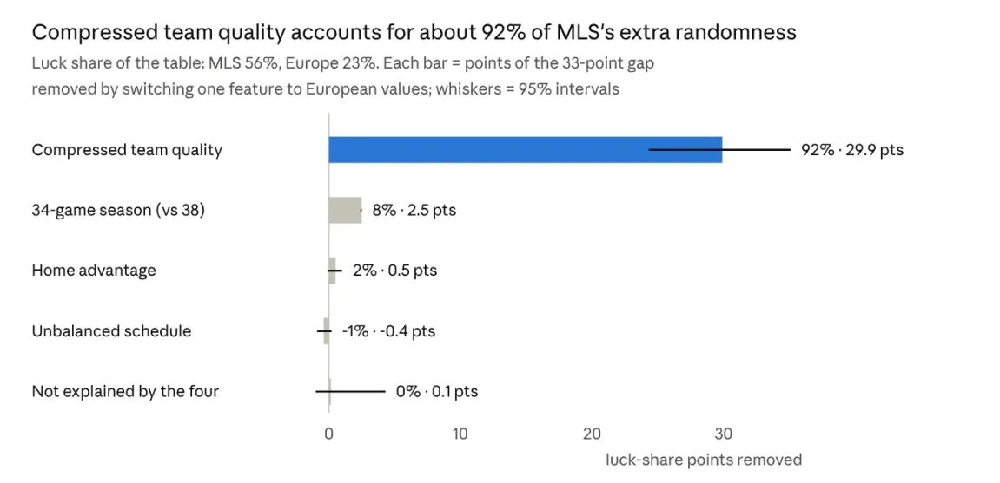

Question 1 · Paper 1
How much of an MLS table is chance?
About 56% of the spread in an MLS table comes from chance (95% interval 47–66%). Across eleven European top flights the figure is 23%.
The claim
MLS tables are much less predictable than European tables, and most of the difference comes from the teams themselves, not from luck in individual matches. MLS teams are simply closer together in quality, so the same amount of match-to-match randomness moves the table further.

The evidence
- Every MLS regular season from 2013 to 2026 (2020 excluded), fitted with a Bayesian match model and compared with eleven European top flights.
- Each MLS season replayed thousands of times with one league-design feature at a time switched to its European value: schedule, season length, home advantage and the spread of team quality.
- The model is checked against closing betting odds, which beat it on match-level prediction; the paper reports that too.
- 16 validation checks were set out in advance: 8 passed, 7 failed and 1 partly passed. All of them are reported in the paper.
Where the evidence is weak
- Cause. The paper does not show that MLS rules cause the compression. It measures the compression; it does not prove where it comes from.
- Spread. The model understates how spread out real tables are; two of the failed checks are about this.
- Persistence. The split between lasting quality and season-to-season change rests on only 11 pairs of seasons.
- Home advantage. MLS home advantage is only partly explained.
Go deeper
If the gap is about teams being close together, the next question is where on the roster that closeness comes from.
Question 2 · Paper 2Why are MLS teams so close together? The toolSee what it means for your club's roster